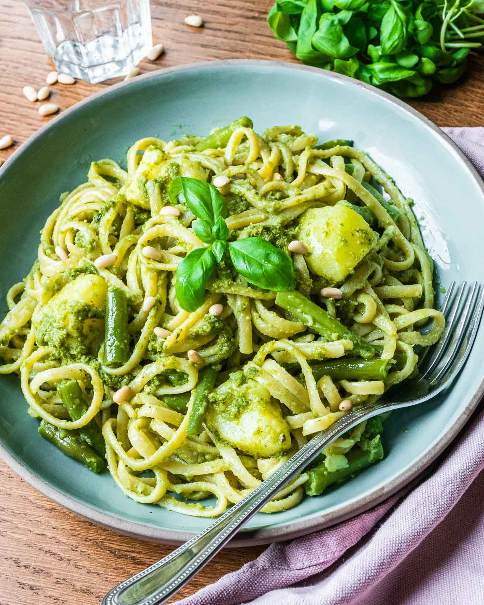

Trenette Al Pesto

Description
Trenette al pesto is a traditional Italian pasta dish from the Liguria region, renowned for its simplicity and vibrant flavors. The dish features trenette, a type of long, flat pasta similar to linguine, coated in a fragrant pesto sauce made from fresh basil, garlic, pine nuts, Parmesan cheese, and extra virgin olive oil.
In the animated movie "Luca," trenette al pesto takes center stage in a heartwarming scene that captures the essence of Italian coastal life. Luca and his friend Alberto, who are sea monsters exploring the human world, experience the joy of Italian cuisine for the first time through this dish, symbolizing their integration and acceptance into human culture. The scene not only highlights the deliciousness of trenette al pesto but also the themes of friendship and discovery that are central to the film.
Ingredients
Pesto Sauce
- Fresh Basil Leaves - 2 cups, packed
- Garlic - 2-3 cloves
- Pine Nuts - 2 tablespoons
- Parmesan Cheese - 1/2 cup, grated
- Pecorino Cheese - 1/4 cup, grated (optional)
- Extra Virgin Olive Oil - 1/2 cup
- Salt - to taste
Pasta
- Trenette Pasta - 1 pound (if not available, you can use linguine or fettuccine)
- Potatoes - 1-2 medium, peeled and diced (optional but traditional in Ligurian recipes)
- Green Beans - 1 cup, trimmed and cut into pieces (optional but traditional)
Steps
-
Pesto Preparation:
- In a food processor or mortar and pestle, combine basil leaves, garlic, pine nuts, and a pinch of salt. Blend until smooth.
- Gradually add the grated Parmesan (and Pecorino, if using), and continue blending.
- Slowly drizzle in the olive oil while blending until the mixture is smooth and creamy. Adjust salt to taste.
-
Cooking the Pasta:
- Bring a large pot of salted water to a boil.
- Add the diced potatoes and green beans (if using) and cook for about 5 minutes.
- Add the trenette pasta to the same pot and cook until al dente, according to package instructions.
-
Combining:
- Reserve a cup of the pasta cooking water, then drain the pasta, potatoes, and green beans.
- Toss the hot pasta mixture with the pesto sauce, adding some reserved pasta water as needed to create a smooth, silky sauce that coats the pasta evenly.
Serve immediately, garnished with extra grated Parmesan cheese if desired. Enjoy the vibrant, fresh flavors of this classic Italian dish!